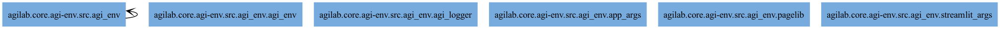
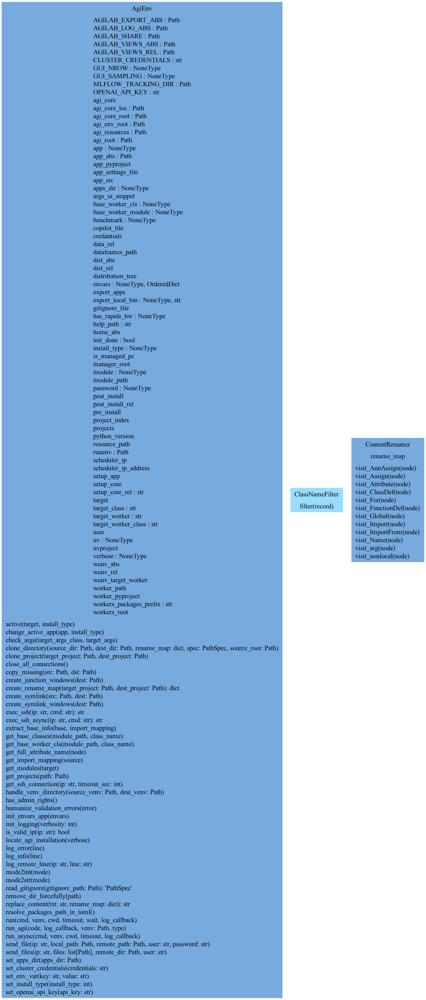

agi_env API
This is a module share between core/agi-core and gui/agilab to set all the path required by both
Usage Example
Instanciation
from agi_env import AgiEnv
env = AgiEnv('my-code')
# or
path_to_my_code = Path("../../agi/apps/my-code-project/src/my_code/my_code.py")
env = AgiEnv(path_to_my_code)
Reference
{kind=link}

- class agi_env.agi_env.AgiEnv(install_type=None, apps_dir=None, active_app=None, active_module=None, verbose=None)[source]
Bases:
object- GUI_NROW = None
- GUI_SAMPLING = None
- __init__(install_type=None, apps_dir=None, active_app=None, active_module=None, verbose=None)[source]
- app = None
- apps_dir = None
- clone_directory(source_dir, dest_dir, rename_map, spec, source_root)[source]
Recursively copy + rename directories, files, and contents, applying renaming only on exact path segments.
- clone_project(target_project, dest_project)[source]
Clone a project by copying files and directories, applying renaming, then cleaning up any leftovers.
- Parameters:
target_project – Path under self.apps_dir (e.g. Path(“flight_project”))
dest_project – Path under self.apps_dir (e.g. Path(“tata_project”))
- async close_all_connections()[source]
Ferme proprement toutes les connexions SSH ouvertes. À appeler à la fin de ton programme ou avant arrêt.
- create_junction_windows(dest)[source]
Create a directory junction on Windows.
- Parameters:
source (Path) – The target directory path.
dest (Path) – The destination junction path.
- create_rename_map(target_project, dest_project)[source]
Create a mapping of old → new names for cloning. Includes project names, top-level src folders, worker folders, in-file identifiers and class names.
- Return type:
dict
- create_symlink_windows(dest)[source]
Create a symbolic link on Windows, handling permissions and types.
- Parameters:
source (Path) – Source directory path.
dest (Path) – Destination symlink path.
- handle_venv_directory(source_venv, dest_venv)[source]
Create a symbolic link for the .venv directory instead of copying it.
- Parameters:
source_venv (Path) – Source .venv directory path.
dest_venv (Path) – Destination .venv symbolic link path.
- has_admin_rights()[source]
Check if the current process has administrative rights on Windows.
- Returns:
True if admin, False otherwise.
- Return type:
bool
- init_done = False
- init_logging(verbosity=None)[source]
Initialize logging with a level based on verbosity: 0 = WARNING, 1 = INFO, 2 or more = DEBUG INFO and DEBUG levels go to stdout; WARNING and above go to stderr.
- install_type = None
- static log_remote_line(ip, line)[source]
Log a line from remote SSH output with the proper log level.
- Parameters:
ip (str) – IP address of remote host.
line (str) – One line of output from remote process.
- module = None
- async static run(cmd, venv, cwd=None, timeout=None, wait=True, log_callback=None)[source]
Run a shell command synchronously inside a virtual environment. Log stdout lines as info, stderr lines as error.
Returns full stdout string.
- async run_agi(code, log_callback=None, venv=None, type=None)[source]
Asynchronous version of run_agi for use within an async context.
- async static run_async(cmd, venv=None, cwd=None, timeout=None, log_callback=None)[source]
Run a shell command asynchronously inside a virtual environment.
- property scheduler_ip_address
- class agi_env.agi_env.ContentRenamer(rename_map)[source]
Bases:
NodeTransformerA class that renames identifiers in an abstract syntax tree (AST). .. attribute:: rename_map
A mapping of old identifiers to new identifiers.
- type:
dict
- __init__(rename_map)[source]
Initialize the ContentRenamer with the rename_map.
- Parameters:
rename_map (dict) – Mapping of old names to new names.
- generic_visit(node)
Called if no explicit visitor function exists for a node.
- visit(node)
Visit a node.
- visit_AnnAssign(node)[source]
Visit and process an AnnAssign node in an abstract syntax tree.
- Parameters:
self – The AST visitor object.
node – The AnnAssign node to be visited.
- Returns:
The visited AnnAssign node.
- Return type:
AnnAssign
- visit_Assign(node)[source]
Visit and process an assignment node.
- Parameters:
self – The instance of the visitor class.
node – The assignment node to be visited.
- Returns:
The visited assignment node.
- Return type:
ast.Node
- visit_Attribute(node)[source]
Visit and potentially rename an attribute in a node.
- Parameters:
node – A node representing an attribute.
- Returns:
The visited node with potential attribute renamed.
- Return type:
node
- Raises:
None. –
- visit_ClassDef(node)[source]
Visit and potentially rename a ClassDef node.
- Parameters:
node (ast.ClassDef) – The ClassDef node to visit.
- Returns:
The potentially modified ClassDef node.
- Return type:
ast.ClassDef
- visit_Constant(node)
- visit_For(node)[source]
Visit and potentially rename the target variable in a For loop node.
- Parameters:
node (ast.For) – The For loop node to visit.
- Returns:
The modified For loop node.
- Return type:
ast.For
Note
This function may modify the target variable in the For loop node if it exists in the rename map.
- visit_FunctionDef(node)[source]
Rename a function node based on a provided mapping.
- Parameters:
node (ast.FunctionDef) – The function node to be processed.
- Returns:
The function node with potential name change.
- Return type:
ast.FunctionDef
- visit_Global(node)[source]
Visit and potentially rename global variables in the AST node.
- Parameters:
self – The instance of the class that contains the renaming logic.
node – The AST node to visit and potentially rename global variables.
- Returns:
The modified AST node with global variable names potentially renamed.
- Return type:
AST node
- visit_Import(node)[source]
Rename imported modules in ‘import module’ statements.
- Parameters:
node (ast.Import) – The import node.
- visit_ImportFrom(node)[source]
Rename modules and imported names in ‘from module import name’ statements.
- Parameters:
node (ast.ImportFrom) – The import from node.
- visit_Name(node)[source]
Visit and potentially rename a Name node in the abstract syntax tree.
- Parameters:
self – The current object instance.
node – The Name node in the abstract syntax tree.
- Returns:
The modified Name node after potential renaming.
- Return type:
ast.Node
Note
This function modifies the Name node in place.
- Raises:
None –
- visit_arg(node)[source]
Visit and potentially rename an argument node.
- Parameters:
self – The instance of the class.
node – The argument node to visit and possibly rename.
- Returns:
The modified argument node.
- Return type:
ast.AST
Notes
Modifies the argument node in place if its name is found in the rename map.
- Raises:
None. –
- visit_nonlocal(node)[source]
Visit and potentially rename nonlocal variables in the AST node.
- Parameters:
self – An instance of the class containing the visit_nonlocal method.
node – The AST node to visit and potentially modify.
- Returns:
The modified AST node after visiting and potentially renaming nonlocal variables.
- Return type:
ast.AST
{kind=link}
